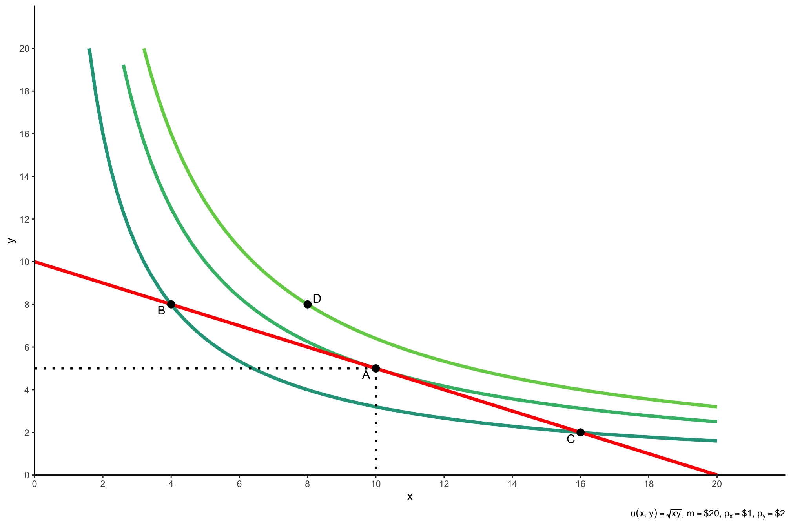

Fundamentos de Teor√≠a Economica Ô∏èüôÇ
Diseño y Evaluación de Proyectos
![]()
Preguntas de la sesión anterior?
Preferencias
- Cuál de las siguientes cestas prefiere sobre cualquier otra?
- Ejemplo de dos cestas \((x,y):\)
\[a=(2,5) \quad \text{o} \quad b=(6,4)\]
Preferencias
Tenemos tres posibles respuestas:
- \(a \succ b: \text{(estrictamente) se prefiere a sobre b}\)
- \(a \prec b: \text{(estrictamente) se prefiere b sobre a}\)
- \(a \sim b: \text{indiferencia entre a y b}\)
El análisis de las preferencias:
se realiza a través de las elecciones realizadas por los consumidores mediante el planteamiento de un conjunto de axiomas (describen el comportamiento racional).
Los axiomas son supuestos utilizados para comparar y ordenar las cestas demandadas de bienes y servicios dadas las preferencias del consumidor.
Preferencias
flowchart LR
A(Axiomas) --> B(Postulados)
B --> C[Preferencias deben ser]
C --> D(Completas)
C --> E(Transitivas)
C --> F(Continuas)
C --> G(No Saturación)
Preferencias
- Siempre (+) es mejor
- No podemos interceptar \(U(x)\)
- Son densas
Preferencias
Preferencias
Piense en lo siguiente:
Carlos Yanes es un gerente de proyectos en una empresa de construcción. Recientemente, la empresa ha recibido tres propuestas para la construcción de un complejo habitacional, y Carlos debe decidir cuál proyecto será aprobado. Cada proyecto se evalúa en función de tres criterios clave: costo, tiempo de ejecución, y calidad de construcción. La siguiente tabla clasifica los tres proyectos según estos criterios:
Tabla 1: Evaluación de Proyectos de Construcción
| Proyecto A | Proyecto B | Proyecto C | |
|---|---|---|---|
| Costo | Bajo | Alto | Medio |
| Tiempo de Ejecución | Largo | Corto | Medio |
| Calidad de Construcción | Alta | Media | Alta |
Preferencias
Carlos Yanes prefiere un proyecto \(P \succ Q\) si el proyecto \(P\) es mejor que el proyecto \(Q\) en al menos dos de los tres criterios mencionados.
Pregunta: ¿Es posible que Carlos tenga preferencias transitivas en la selección de proyectos? Es decir, si Carlos prefiere el Proyecto A sobre el Proyecto B, y el Proyecto B sobre el Proyecto C, ¿debería necesariamente preferir el Proyecto A sobre el Proyecto C? Justifique su respuesta con base en los datos de la tabla y discuta cómo las preferencias pueden afectar la toma de decisiones en la formulación y selección de proyectos.
Mecanismos agregados de Preferencias
Preferencias agregadas
Los mercados son un proceso de descubrimiento que utiliza los precios para agregar conocimientos dispersos sobre la escasez, las preferencias y las oportunidades en relación con los recursos.
Las decisiones individuales maximizan las preferencias individuales dentro de unos límites.
La política puede considerarse un proceso de descubrimiento que utiliza los votos para agregar conocimientos dispersos sobre las preferencias individuales en una única elección de grupo.
Teoría de la elección social
estudia cómo agregar las preferencias individuales en una preferencia grupal coherente para alcanzar una decisión colectiva para un grupo.
Preferencias agregadas
La elección colectiva pretende maximizar las preferencias del grupo dentro de unas limitaciones
En la práctica: análisis de reglas de votación alternativas
Preferencias agregadas
\[ \begin{bmatrix} A \\ B \\ C \end{bmatrix}\cdots \begin{bmatrix} B \\ A \\ C \end{bmatrix} \cdots \begin{bmatrix} C \\ B \\ A \end{bmatrix}\Longrightarrow \quad \begin{bmatrix} A \\ C \\ B \end{bmatrix}\]
Preferencias agregadas
Votar de alguna forma es habitual:
Ciudadanos que eligen a un funcionario. Legisladores que presentan, modifican y aprueban proyectos de ley en comisiones o en sesiones plenarias. Reguladores que elaboran una nueva norma. Jurados en litigios penales. Jueces de tribunales de apelación.
Diferentes procedimientos (votaciones por parejas, secuenciación, etc.), y requieren diferentes niveles de acuerdo (mayoría, supermayoría, etc.)
Preferencias agregadas
- Una votación con:
- Mas de 3 electores
- Mas de 3 elecciones
- Desacuerdo
- Conduce a un ciclo de votación: una mayoría se opone a cada resultado
- Cada opción perderá frente a otra alternativa Nota: ¡NO es un empate a tres!
Preferencias: Condorcet
- Un candidato es el ganador de Condorcet si gana en enfrentamientos directos contra todos los otros candidatos.
- Ejemplo:
- Tres candidatos: A, B, C
- Preferencias de los votantes:
- 40%: A > B > C
- 35%: B > C > A
- 25%: C > A > B
- Enfrentamientos:
- A vs B: A gana (65% vs 35%)
- A vs C: C gana (60% vs 40%)
- B vs C: B gana (75% vs 25%)
- Resultado: Tendriamos un empate
Preferencias: Eliminación Secuencial
- En cada ronda, se elimina al candidato con el menor número de votos hasta que quede uno solo.
- Ejemplo:
- Tres candidatos: A, B, C
- Preferencias de los votantes:
- 40%: A > B > C
- 35%: B > C > A
- 25%: C > A > B
- Ronda 1:
- C tiene menos votos, es eliminado.
- Ronda 2:
- Los votos de C se redistribuyen: A gana con el 75% de los votos.
- Resultado: A es el ganador tras la eliminación de C.
Preferencias: Segunda Vuelta
- Si ningún candidato obtiene la mayoría absoluta en la primera vuelta, se realiza una segunda vuelta entre los dos más votados.
- Ejemplo:
- Tres candidatos: A, B, C
- Primera vuelta:
- A: 40%
- B: 35%
- C: 25%
- Segunda vuelta:
- A vs B: A gana con 65% frente a B (35%).
- Resultado: A gana la elección en la segunda vuelta.
Preferencias: Conteo de Borda
- Los votantes clasifican a los candidatos, y se asignan puntos según la posición en la que son clasificados.
- Ejemplo:
- Tres candidatos: A, B, C
- Asignación de puntos:
- 1er lugar: 2 puntos
- 2do lugar: 1 punto
- 3er lugar: 0 puntos
- Preferencias de los votantes:
- 40%: A > B > C \((\text{A}:2 \times 40\%, B: 1 \times 40\%)\)
- Preferencias de los votantes:
- 35%: B > C > A \((\text{B}:2 \times 35\%, C: 1 \times 35\%)\)
- 25%: C > A > B \((\text{C}:2 \times 25\%, A: 1 \times 25\%)\)
- Resultado:
- A: 80 + 25 = 105 puntos
- B: 40 + 70 = 110 puntos
- C: 50 + 35 = 85 puntos
- Ganador: B es el ganador según el conteo de Borda.
Preferencias: Ejercicio
Imagine que un municipio debe decidir entre cuatro proyectos de infraestructura pública, y las partes interesadas (ciudadanos, funcionarios, etc.) han votado según sus preferencias.
Los proyectos son: Proyecto A: Construcción de un parque comunitario. Proyecto B: Expansión de la red de transporte público. Proyecto C: Renovación de la infraestructura escolar. Proyecto D: Desarrollo de un centro de salud.
Preferencias de los Votantes
| Votantes | Preferencia 1 | Preferencia 2 | Preferencia 3 | Preferencia 4 |
|---|---|---|---|---|
| 40% | A | B | C | D |
| 30% | C | B | D | A |
| 20% | B | C | A | D |
| 10% | D | C | B | A |
Preferencias: Ejercicio
Qué proyecto gana en cada una de las elecciones?
Si pudieramos modificar una de las elecciones que sistema se debe elegir?
Demanda y Oferta
Demanda y oferta
Gráfico de Kyle Raze
La Demanda dice de la disposición a pagar
\(\Downarrow P \rightarrow Q_d \Uparrow\)
Demanda y oferta
Gráfico de Kyle Raze
La Oferta dice de la disposición a ofrecer
\(\Uparrow P \rightarrow Q_s \Uparrow\)
Demanda y oferta
Gráfico de Kyle Raze
La Oferta y Demanda se igualan
La \(Q_d = Q_s\)
Por otro lado tendremos desequilibrio
Demanda y oferta
Gráfico de Kyle Raze
La Oferta y Demanda se igualan
La \(Q_d = Q_s\)
Note que 5 son las unidades requeridas
Demanda y oferta
La Oferta y Demanda no son similares
La \(Q_d \neq Q_s\)
Ocurre algo como:
Demanda y oferta
La Oferta y Demanda no son similares
Precios \(\Uparrow P\)
Se ofrecen 3 unidades
Demanda y oferta
La Oferta y Demanda no son similares
Precios \(\Downarrow P\)
Hay exceso de oferta

Demanda y oferta
La Oferta y Demanda no son similares
Precios \(\Downarrow P\)
Se ofrecen 7 unidades
Disposición a pagar
Elementos
- Los mercados pueden ajustarse a si mismos.
- Muchas veces son intervenidos por el mismo estado
- El precio sigue siendo la señal del mercado.
- Las incidencias tambien tienen que ver con incentivos
Valoración Marginal
- El valor marginal VM
- Si \(\uparrow Q\rightarrow VM\downarrow\)
- Buscamos que \(Q=VM\)
Valoración Marginal
Cuantas unidades debe consumir a \(P=4.5\)?
R./
Valoración Marginal
Cuantas unidades debe consumir a \(P=4.5\)?
R./ 4
Valoración Marginal
Cuantas unidades debe consumir a \(P=3\)?
R./
Valoración Marginal
Cuantas unidades debe consumir a \(P=3\)?
R./ 6
Valoración Marginal

Cuantas unidades debe consumir a \(P=9\)?
R./
Valoración Marginal
Cuantas unidades debe consumir a \(P=9\)?
R./ 0
Valoración Marginal
Las decisiones de compra. Mentalmente se asocian a la valoración marginal
Reglas:
- Detenga sus compras si \(VM>P\). Ya usted ha comprado muy poco
- Detenga sus compras si \(VM<P\). Ya usted ha comprado demasiado
- Haga sus compras si \(VM=P\). Usted ha comprado lo optimo
Maximización utilidad
Maximización de utilidad
Modelamos la mayoría de las situaciones como un problema de optimización con restricciones:
Las personas optimizan: hacen concesiones para alcanzar su objetivo lo mejor posible.
Sujeto a restricciones: recursos limitados (ingresos, tiempo, atención, etc.).
Maximización de utilidad
Uno de los modelos matemáticos de mayor utilidad general
Infinitas aplicaciones: cómo modelamos a casi todos los individuos?
Consumidor, empresa, político, juez, burócrata, votante, dictador, pirata, cártel de la droga, drogadicto, padre, hijo, etc.
Habilidad económica clave: reconocer cómo aplicar el modelo a una situación
Maximización de utilidad
Todos los modelos de optimización con restricciones tienen tres partes móviles:
Elegir: < alguna alternativa >
Con el fin de maximizar: < algún objetivo >
Sujeto a: < algunas restricciones >
Gráficas
Utilidad: Bienestar
- Optimizamos de acuerdo a decisiones - Partamos de un ejemplo - Prefiero un apto grande - o a mis amigos mas cercanos? - Pero debo vivir en un piso mas pequeño
Utilidad: Bienestar
- Siempre preferimos mas a menos
- Por ello \(A \sim B \sim C\)
- Pero \(A \succ E\)
- Deseable pero imposible \(D \succ A\)
Utilidad: Bienestar
Vamos a tener: \[\max_{x,y \geq0}\; u(x,y)\]
Sujeto a: \(P_xX+p_yY=M\)
Esto requiere cálculo, pero vamos hacerlo gráficamente

Utilidad: Bienestar
Solución Gráfica: la curva de indiferencia (mas alta) y que es tangente a la restricción presupuestaria
- Los puntos B o C gastamos el presupuesto, pero hay mejores combinaciones
Utilidad: Bienestar
En ocasiones queremos pensar que una opción como B es deseable.
Pero ocurre que: \(\color{#20A387FF}{\text{Curva de Indiferencia}}>\color{red}{\text{M}}\)
El consumidor tiene \(\frac{UM_x}{UM_y}>\frac{p_x}{p_y}\)
Esto es \(\color{#20A387FF}{2}>\color{red}{0.5}\)
Utilidad: Bienestar
Estando en C, la elección se vuelve en querer mas de Y
La relación se vuelve \(0.5Y=1X\)
Utilidad: Bienestar
La tasa por la cual se sacrifica un bien por otro manteniendo constante el nivel de utilidad se denomina tasa marginal de sustitución.
\[Umg_{x}=Umg_{y}\]
Viene a ser:
\[T.M.S= \dfrac{Umg_{x}}{Umg_{y}}\]
Utilidad: Bienestar
Piense por un momento en la siguiente función de utilidad de un individuo:
\[U=U(X,Y)\]
La derivada total de \(U\) viene a ser:
\[U= \frac{\partial U}{\partial x}dx+\frac{\partial U}{\partial y}dy\] A lo largo de cualquier curva de indiferencia, la utilidad es constante.
\[dU=0\]
\[TMS= - \frac{dy}{dx} \biggr\rvert_{U = Constante} =\frac{\frac{\partial U}{\partial x}}{\frac{\partial U}{\partial y}}\]
Utilidad: Bienestar
La TMS es la tasa o relación entre utilidades marginales de \(X\) y \(Y\).
\[U(X,Y)=XY\]
Derivamos y tendremos
\[\frac{dU}{dx}=y \quad \frac{dU}{dy}=x\]
\[\text{TMS}=\frac{y}{x}=\frac{P_x}{P_y}\]
Efectos
Efectos
La demanda/ consumo de un individuo depende del ingreso y los precios
Esto formalmente es: \(D=D(M, P_x, P_y)\)
¿Cómo es el consumo/demanda cuando \((x)\) cambia?
Efecto Ingreso: Como cambia el \(Consumo\) cuando cambia el \(M\) ingreso?
Efecto Precio (propio): Como cambia el \(Consumo\) cuando cambia el \(P_x\) precio?
Efecto Precio: Como cambia el \(Consumo\) cuando cambia el \(P_y\) precio de otro bien?
Efectos
- El efecto de precios (ley de demanda) es actualmente el resultado de dos efectos
Efecto real del ingreso: Cambio del consumo debido a cambio en el poder de compra.
Efecto Sustitución: Cambio en el consumo debido a un cambio relativo en los precios
- Esto es lo que se conoce \(\color{red}{\text{Efecto precio}}=\color{#315e26}{\text{Efecto Ingreso}} + \color{orange}{\text{Efecto Sustitución}}\)
Efectos
Piense que hay solo un bien de consumo y usted tiene
$100de ingreso y el precio es de$10, luego usted puede consumir 10 unidades de \((x)\).Ahora pasa que el precio sube a
$20. Usted ahora solo podrá consumir 5 unidades de \((x)\).Eso se denomina Efecto ingreso
El cambio de poder de compra puede aumentar/disminuir su consumo sin afectar su ingreso

Efectos
Digamos ahora que tiene dos bienes \((X,Y)\) y tiene un ingreso de
$100.Ahora el precio de \((Y)\) baja
$30. Esto lo/a tienta y consume ahora mas \((Y)\) que \((X)\)Eso se denomina Efecto sustitución
El cambio de consumo de un bien por otro en términos relativos afecta totalmente

Efectos
Una baja en el precio de \((X)\)
Efectos
Afecta y genera un nuevo consumo de \((X)\) y tiene mas “poder” de compra.
Efectos
Se busca regresarlo a su utilidad inicial
Efectos
Variacion Compensada
¿Cuánto tendría que darle o quitarle al consumidor después del cambio de precios para que vuelva al nivel de satisfacción que tenía antes del cambio?
Se calcula con respecto a la utilidad final, es decir, se mide en términos de cuánto se necesitaría para devolver al consumidor a su nivel de satisfacción original después de que haya ocurrido el cambio en los precios.
Efectos
Una baja en el precio de \((X)\)
Efectos
Modifica el bienestar a una nueva función de utlidad de \(U(2)\)
Efectos
Es una equivalencia de mantenerlo en su posición final \(U(2)\)
Efectos
Variación Equivalente
¿Cuánto tendrías que darle al consumidor antes del cambio de precios para que se quede igual de satisfecho después del cambio?
Se calcula considerando la utilidad inicial, es decir, se mide con respecto a cómo el consumidor valora el cambio antes de que ocurra.
Excedente del consumidor
Excedente del consumidor
El área bajo la curva de demanda, es una zona de bienestar
Excedente del consumidor
Cuando baja el precio podemos calcular esa variación. Si el área se hace mas grande, mayor bienestar tiene el individuo
Excedente del consumidor
Algunas veces puede no ser lineal
Se puede hacer con integrales
Elasticidad
Elasticidad
Elasticidad
Mide como una variable responde a los cambios de otra variable de interés. Para facilidad, esta puede ser expresada como el cambio porcentual de una variable por el cambio porcentual de la otra.
\[\epsilon^{d}=\dfrac{\% \triangle Q_{d}}{\% \triangle P} = \dfrac{\dfrac{\triangle Q}{Q}}{\dfrac{\triangle P}{P}}\]
Debe saber que \(\triangle Q= Q_2-Q_1\), donde \(Q_2\) es el presente de la variable o tiempo actual y \(Q_1\) viene siendo el pasado.
Elasticidad
Variación Porcentual (%): Mide los cambios porcentuales de una variable característica. Esta puede ser positiva o negativa.
\[Var\;\%=\frac{\left ( X_{Presente}-X_{Pasado} \right )}{X_{Pasado}}*100\]
Tenga en consideración que si los precios por decir un ejemplo eran de $13000 y pasaron a ser de $14700, entonces la variación porcentual es de:
\[Var\;\%=\frac{\left ( 14700-13000 \right )}{13000}*100= 13\%\]
Elasticidad
Digamos ahora que las cantidades de demanda (consumo), pasaron de 20 a 15, al calcular su variación tendremos
\[Var\;\%=\frac{\left ( X_{Presente}-X_{Pasado} \right )}{X_{Pasado}}*100\]
\[Var\;\%=\frac{\left ( 15-20 \right )}{20}*100= -25\%\]
La elasticidad viene a ser: \(e_d=\dfrac{-25\%}{13\%}=-1.92\), que significa que el cambio ha sido elástico.
Elasticidad
La medida de respuesta a la sensibilidad de los precios
\[\epsilon_d = \dfrac{\text{% cambio en cantidad de demanda}}{\text{% cambio en los precios}} \leq 0\]
Interpretación: «Un aumento de un uno por ciento el precio conduce a un aumento de \(\epsilon_d\) por ciento en la cantidad demandada».
\(\epsilon_d < -1\) ==> la demanda es elastica o sensible a cambios en el precio.
\(-1 <\epsilon_d \leq 0\) ==> la demanda es inelastica o insensible a cambios en el precio.
Elasticidad
Ejemplos de sensibilidad de consumo vamos a tener:
| Bien/Servicio | Elasticidad de la Demanda | Elastica o Inelastica? |
|---|---|---|
| Viajes de Negocio | -0.10 | Inelastico |
| Cuidado Médico | -0.17 | Inelastico |
| Café | -0.25 | Inelastico |
| Cigarrillos | -0.45 | Inelastico |
| Cine | -0.90 | Inelastico |
| Colegio Privado | -1.10 | Elastico |
| Restaurante | -1.60 | Elastico |
| Viajes de Ocio | -2.40 | Elastico |
| Vegetales | -3.70 | Elastico |
| Carros Honda | -4.00 | Elastico |
Elasticidad
Algunos ejemplos por consumo de elasticidad-ingreso tenemos:
| Bien/Servicio | Elasticidad ingreso | Normal o Inferior? |
|---|---|---|
| Automoviles | 3.00 | Normal |
| Restaurantes | 1.40 | Normal |
| Casas | 1.20 | Normal |
| Gasolina | 1.06 | Normal |
| Apartamentos (Arriendo | 1.00 | Normal |
| Café | 0.51 | Normal |
| Cigarrillos | 0.42 | Normal |
| Cuidado Médico | 0.22 | Normal |
| Margarinas | -0.20 | Inferior |
| Transporte Público | -0.36 | Inferior |
Gracias! por su atención
Alguna pregunta adicional?
Slides de la clase:
Bibliografía
Mankiw, N. G. (2005). Principios de microeconomía /N. Gregory Mankiw (No. 338.5 M55Y.).
Lecture notes Ryan Safner
Krugman, P., & Wells, R. (2014). Microeconomics (for AP). New York: Worth Publishers.
Mokate, K., & Castro, R. (2018). Evaluación económica y social de proyectos de inversión: Segunda edición. Universidad de los Andes.